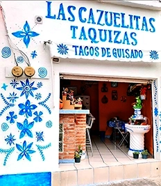

El lugar donde el sabor casero se une con la tradición. Disfruta de nuestros deliciosos tacos de guisado con tortillas hechas a mano, preparados con los ingredientes más frescos y recetas de antaño. Ya sea que vengas a visitarnos o nos elijas para tu próxima taquiza, te garantizamos una experiencia llena de sabor y calidez. ¡Siéntete como en casa y déjate consentir con cada bocado!
Llevamos más de 20 años de experiencia que nos respaldan, compartiendo la pasión por la comida tradicional mexicana.
Ofrecer a nuestros clientes el auténtico sabor de los tacos de guisado, elaborados con tortillas hechas a mano y recetas caseras que evocan la cocina de nuestras abuelitas.
Brindarte una experiencia única, los guisados son preparados con amor, una atención que te hará sentir como en familia.
La escencia de Las Cazuelitas, sabor y pasión por la comida auténtica mexicana. ¡Gracias por permitirnos ser parte de tu mesa!
Disfruta nuestros tacos de guisado con tortillas hechas a mano:
Gustavo A. Madero, 07360, CDMX
